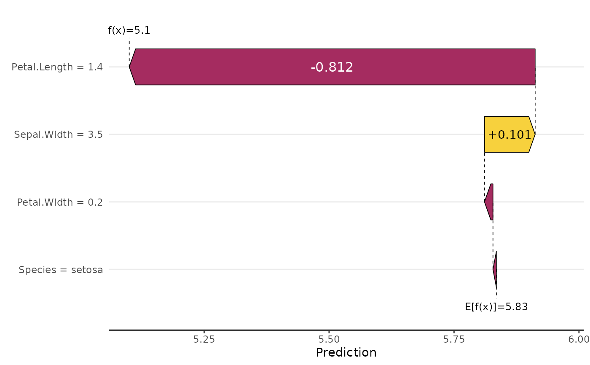
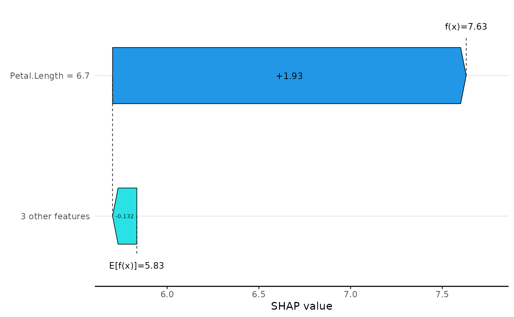
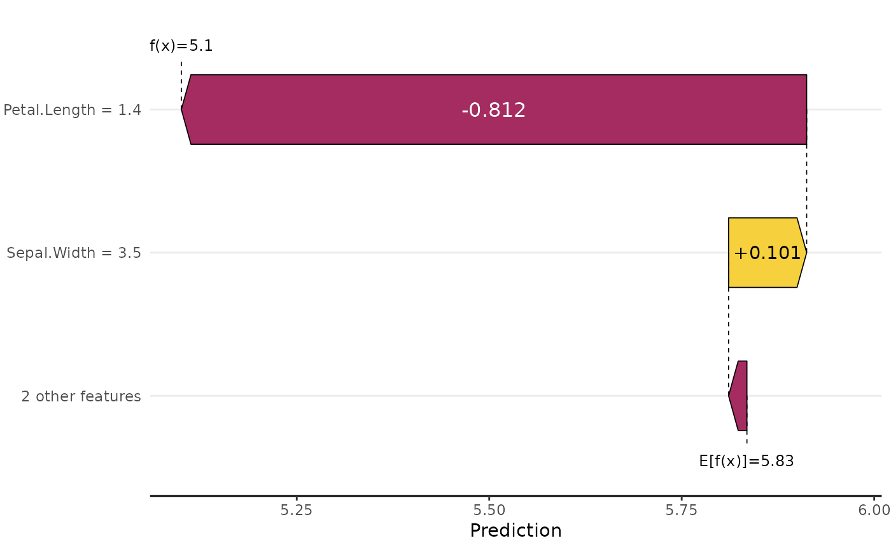
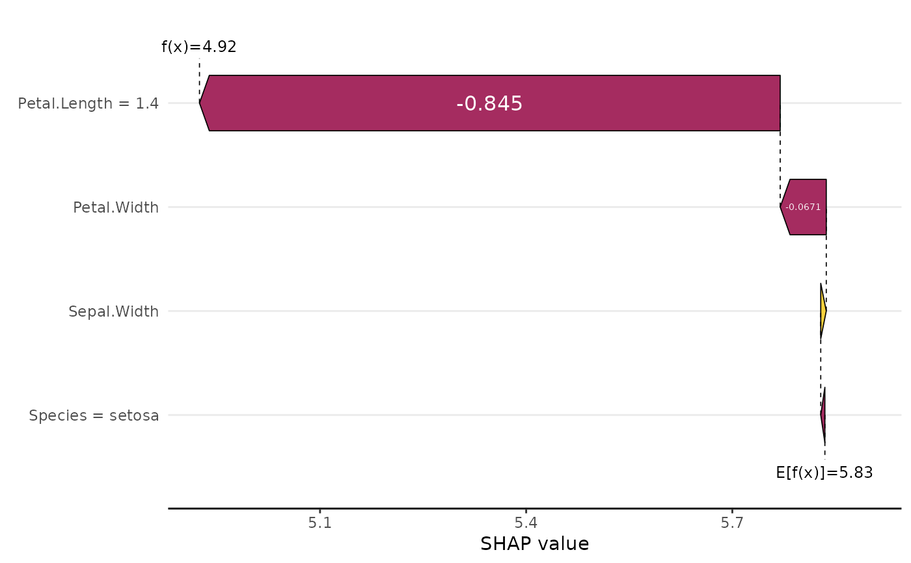
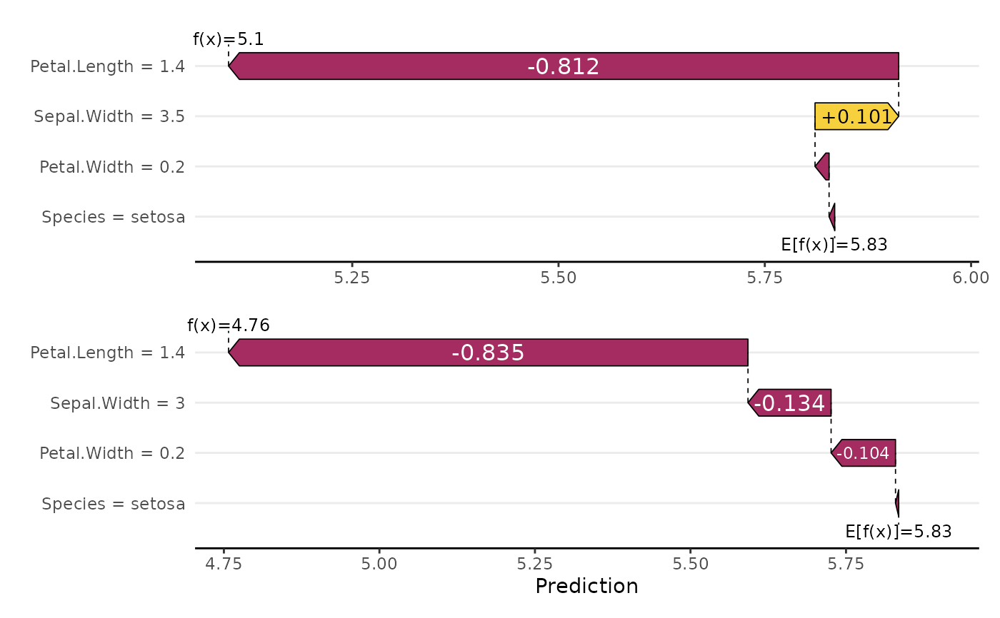

Creates a waterfall plot of SHAP values of one observation. If multiple observations are selected, their SHAP values and predictions are averaged.
sv_waterfall(object, ...)
# Default S3 method
sv_waterfall(object, ...)
# S3 method for class 'shapviz'
sv_waterfall(
object,
row_id = 1L,
max_display = 10L,
order_fun = function(s) order(abs(s)),
fill_colors = c("#f7d13d", "#a52c60"),
format_shap = getOption("shapviz.format_shap"),
format_feat = getOption("shapviz.format_feat"),
contrast = TRUE,
show_connection = TRUE,
show_annotation = TRUE,
annotation_size = 3.2,
...
)
# S3 method for class 'mshapviz'
sv_waterfall(
object,
row_id = 1L,
max_display = 10L,
order_fun = function(s) order(abs(s)),
fill_colors = c("#f7d13d", "#a52c60"),
format_shap = getOption("shapviz.format_shap"),
format_feat = getOption("shapviz.format_feat"),
contrast = TRUE,
show_connection = TRUE,
show_annotation = TRUE,
annotation_size = 3.2,
...
)An object of class "(m)shapviz".
Arguments passed to ggfittext::geom_fit_text().
For example, size = 9 will use fixed text size in the bars and size = 0
will altogether suppress adding text to the bars.
Subset of observations to plot, typically a single row number. If more than one row is selected, SHAP values are averaged, and feature values are shown only when they are unique.
Maximum number of features (with largest absolute SHAP values)
should be plotted? If there are more features, they will be collapsed to one
feature. Set to Inf to show all features.
Function specifying the order of the variables/SHAP values.
It maps the vector s of SHAP values to sort indices from 1 to length(s).
The default is function(s) order(abs(s)). To plot without sorting, use
function(s) 1:length(s) or function(s) length(s):1.
A vector of exactly two fill colors: the first for positive SHAP values, the other for negative ones.
Function used to format SHAP values. The default uses the
global option shapviz.format_shap, which equals to
function(z) prettyNum(z, digits = 3, scientific = FALSE) by default.
Function used to format numeric feature values. The default uses
the global option shapviz.format_feat, which equals to
function(z) prettyNum(z, digits = 3, scientific = FALSE) by default.
Logical flag that detemines whether to use white text in dark arrows.
Default is TRUE.
Should connecting lines be shown? Default is TRUE.
Should "f(x)" and "E(f(x))" be plotted? Default is TRUE.
Size of the annotation text (f(x)=... and E(f(x))=...).
An object of class "ggplot" (or "patchwork") representing a waterfall plot.
f(x) denotes the prediction on the SHAP scale, while E(f(x)) refers to the baseline SHAP value.
sv_waterfall(default): Default method.
sv_waterfall(shapviz): SHAP waterfall plot for an object of class "shapviz".
sv_waterfall(mshapviz): SHAP waterfall plot for an object of class "mshapviz".
dtrain <- xgboost::xgb.DMatrix(
data.matrix(iris[, -1]),
label = iris[, 1], nthread = 1
)
fit <- xgboost::xgb.train(data = dtrain, nrounds = 20, nthread = 1)
x <- shapviz(fit, X_pred = dtrain, X = iris[, -1])
sv_waterfall(x)

sv_waterfall(x, row_id = 123, max_display = 2, size = 9, fill_colors = 4:5)

# Ordered by colnames(x), combined with max_display
sv_waterfall(
x[, sort(colnames(x))],
order_fun = function(s) length(s):1, max_display = 3
)

# Aggregate over all observations with Petal.Length == 1.4
sv_waterfall(x, row_id = x$X$Petal.Length == 1.4)
#> Aggregating SHAP values over 13 observations

# Two observations separately
sv_waterfall(c(x[1, ], x[2, ])) +
patchwork::plot_layout(ncol = 1)
